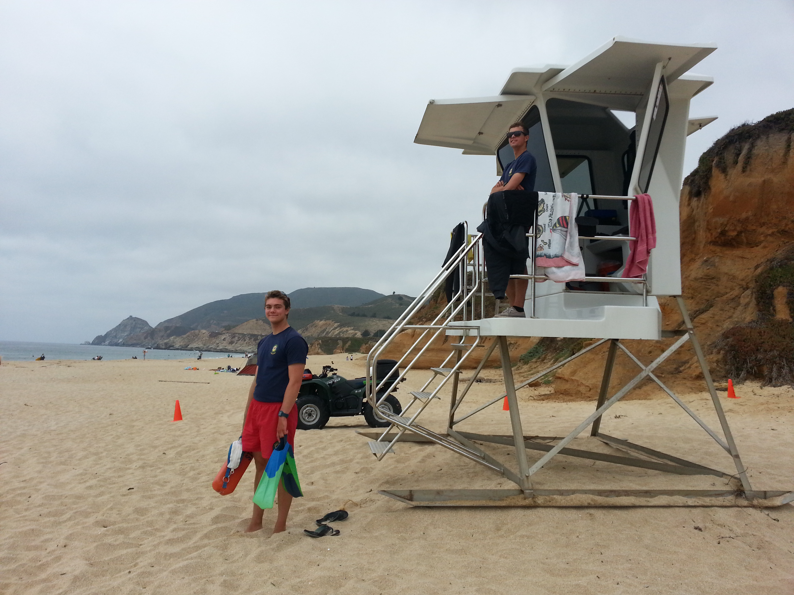
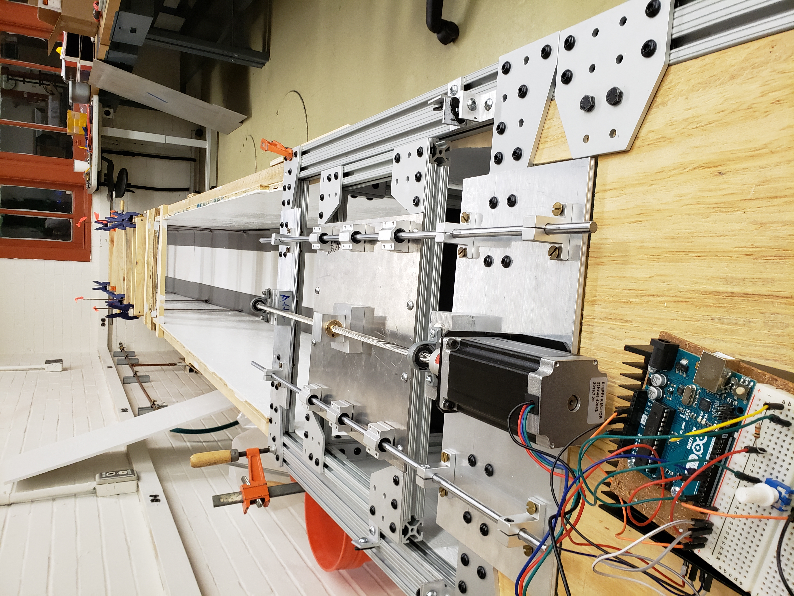
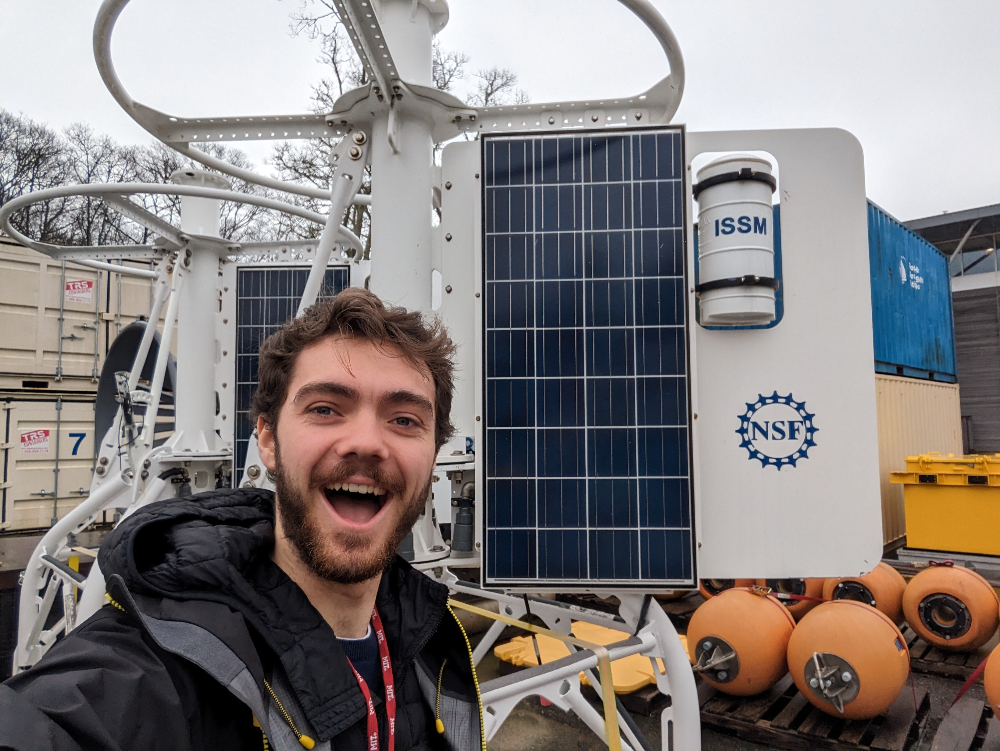

Chasing Coastal Change
I am interested in using satellite and other remote sensing techiniques to observe coastal change. I hope to build datasets that communites can use to plan for sea level rise and other coastal hazards.
From the west coast to the east
I grew up surfing, sailing, and lifeguarding (left) in the cold rough waters off the Northern California Coast just south of San Francisco. Observing the shifting sands onshore and maneuvering the changing currents in the water I was excited from a young age to learn everything I could about the processes that shape our coasts. At the same time, I got a front row seat to witness the conflict that arises when we build to close to the water's edge, attempting to engineer stability in an environment that is never static. Given conflicts between our infrastructure and the coastal boundary are projected to increase with sea level rise and continued development it became clear to me that the people and policy aspects of the coastal conflict will prove just as if not more important than engineering in finding solutions.
I pursued a double major in Civil Engineering and Engineering & Public Policy at Carnegie Mellon University in order to get both the technical and social science background key to solving the coastal challenges. While landlocked, I took my first steps into research under the supervision of Sarah Christian, designing and building a 16ft long flume and stepper motor driven piston type wave generator (right). While COVID kept me from running any experiments, for a brief time in the spring of 2020 there were waves in Pittsburgh PA. Through the pandemic I worked with Jerry Wang to explore the impact of social distancing on pedestrian dynamics in corridors, ultimately leading to a conference presentation and paper. To round out my undergraduate experience I was introduced to satellite remote sensing, working with David Rounce to use synthetic-aperture radar to validate transient snowlines on glaciers. This peek into the potential of remote sensing inspired me to continue my education and seek out a program where I could help advance the use of remote sensing to observe coastal change.
I was fortunate enough to join the MIT-WHOI joint program through the Civil Engineering and Applied Ocean Physics & Engineering departments respectively. Under the supervision of Tom Bell I will be researching how to improve the mapping of coastal morphology and nearshore bathymetry. With my remaining free time I hope to get back into sailing and continue working toward my goal of getting to the top of the highest point in every state (see Highpointing)